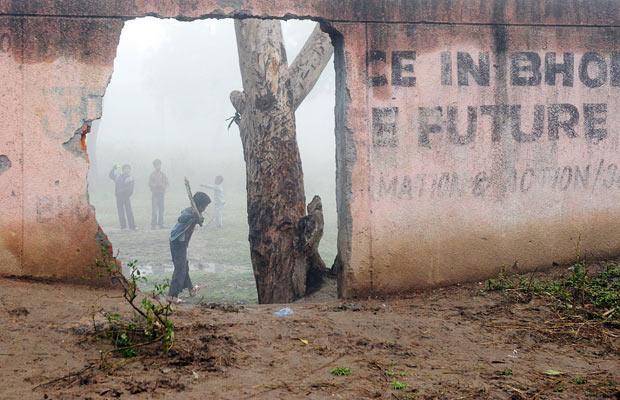
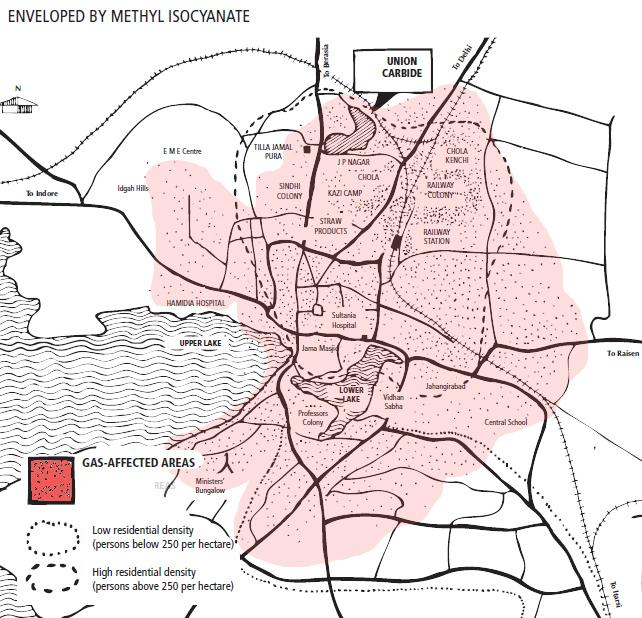
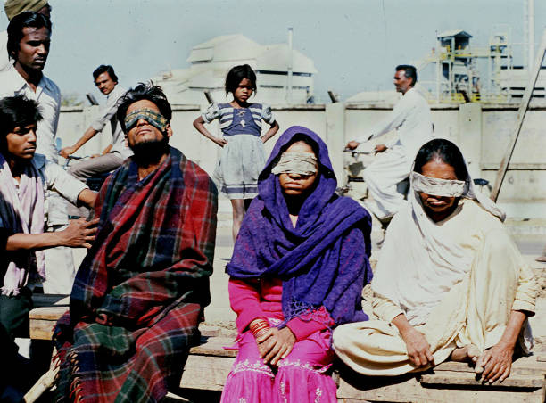
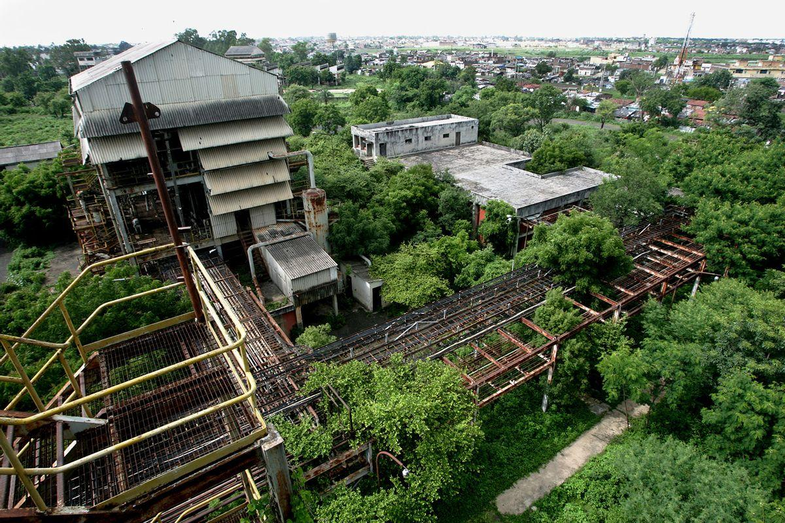

essay · december 2, 2024
40 Years in Bhopal

“Whoever fights monsters should see to it that in the process he does not become a monster. And if you gaze long enough into an abyss, the abyss will gaze back into you.” Friedrich Nietzsche
The remains of the Union Carbide pesticide plant lie in the heart of India, within the central state of Madhya Pradesh. Located in its capital city, Bhopal, and across the lake from VIP Road, past the makeshift shacks, bustling street markets, and surrounded by formidable gates guarded by policemen is the site of the worst industrial disaster in history. Yet, these barriers fail to hide its tragic history. Nestled among neighboring slums — fragile kutcha homes made of straw, mud, and bamboo — the factory site has become an eerie playground. Children now play cricket within its crumbling walls, a surreal normalcy that belies the horrors that once unfolded here.
Four decades have passed since the tragedy that struck Bhopal on the night of December 2nd, 1984. Many residents awoke to a nightmarish scene — burning eyes, choking lungs, and the haunting cries of their neighbors. In their confusion, few suspected the pesticide plant as the source of their suffering; many believed a rogue fire at a nearby spice farm was to blame.
Unbeknownst to them, the origin of their troubles was in fact the Union Carbide factory. Around 11:00 pm on December 2nd, a faulty pipeline sent over 40 tonnes of methyl isocyanate (MIC) gas into the air. Invisible but deadly, the toxic cloud crept southeast, enveloping the densely populated neighborhoods of Bhopal. Within hours, thousands were gasping for breath, fleeing blindly into the night.

The gas blanketed the night skies of Old Bhopal, infiltrating the lungs of all who inhaled the fumes. Once inside the body, it transforms into hydrocyanic acid, attacking the lungs, kidneys, liver, and brain. To escape the burning air, people had no choice but to flee their homes and trek toward New Bhopal, which was farther south but still affected by the leak. Thousands poured into the new city and the main railway station, some dying in the stampede, others being taken by the fumes. The tragedy spared no living being; cattle and pets in nearby farms collapsed, lifeless, victims of the same invisible killer.
In the case of Chernobyl in 1986, it can be said with certainty that 3 lives were claimed at ground zero, with 28 more casualties caused by acute radiation syndrome within the same year. However, the true toll of lives lost in Bhopal from the Union Carbide gas leak, which occurred just two years earlier, remains uncertain. An official death toll was never made as the Indian government ordered mass burials of victims just days after the night of December 2nd. Early reports suggested over 3,000 fatalities within the first 24 hours, but recent assessments paint a far grimmer picture — over 20,000 lives lost and more than half a million left injured or permanently impaired.
The effects of the incident extend far beyond the direct casualties, though, as new generations, especially those living near the abandoned plant, continue to suffer. Physical deformities, vision and hearing impairments, and mental health disorders plague many. Specifically, women in the region suffer a higher rate of miscarriages and their children are disproportionately prone to birth defects. These health crises are intensified by the poor living conditions in the nearby slums. The factory itself, though silent, continues to poison its surroundings. Toxic chemicals left on-site leach into groundwater, contaminating the wells that sustain the city's most vulnerable communities today.

In 1969, Union Carbide India Limited established its Bhopal factory to produce the pesticide Sevin, using MIC as a key ingredient. India, eager to attract foreign investment, allowed companies like Union Carbide to operate with little to no regulation. Union Carbide marketed Sevin as a safer alternative to DDT, a popular pesticide that became infamous for its impacts on human health and the environment. Sevin's production, however, concealed a darker reality — the process relied on highly toxic gases like phosgene and, of course, MIC. Before Bhopal, Union Carbide's only MIC manufacturing site was in West Virginia, but it was shuttered after recurring leaks in the MIC unit raised safety concerns.
Union Carbide's negligence at its West Virginia plant foreshadowed the tragedy in Bhopal. In India, weak oversight exacerbated the company's shortcuts. Despite protests from locals and legislators, the factory was built in a densely populated area of Old Bhopal. Safety measures were minimal, and repairs were often handled by undertrained, underpaid contractors. In one case, exposure to phosgene fumes killed one worker during a repair order in 1981. His widow, Sajida Bano, recalls how Union Carbide decided to resolve the situation:
“Fifty thousand rupees ($1,429) was what the company fixed as the value of my husband's life. I wanted to lodge a police complaint. But the company's local lawyer, who later became a Congress leader, concealed the post-mortem report and bribed the police. I had to look after my sons. So I took the money.” Sajida Bano
Three years later, the MIC leak killed one of her sons and left another crippled.
By 1982, cracks in Union Carbide's operations at Bhopal were evident, and a U.S. inspection team ordered the destruction of 1.8 tonnes of MIC at the factory due to contamination. As rumors spread about the site's closure, the few skilled technicians and management staff left, replaced by workers from unrelated divisions. In 1983, Union Carbide decided to sell the plant, warning that if a buyer was not found, it would shut down and write off the costs. By December 1984, most of the factory's safety systems, especially in the MIC unit, were defunct, setting the stage for disaster.

Forty years after the Bhopal gas tragedy, social organizations like the International Campaign for Justice in Bhopal (ICJB) remain at the forefront of seeking justice for survivors. Through education, grassroots organizing, and non-violent direct action, ICJB strives to hold Dow Chemical — Union Carbide's parent company — and the Indian government accountable for the ongoing disaster. Partnering with survivor groups and coalition members across India, Canada, the U.S., and the U.K., ICJB amplifies the demands of Bhopalis: criminal prosecution of those responsible, fair compensation for health damages, economic rehabilitation for survivors and their children, and environmental remediation for the contamination that continues to plague the region. As the 40th anniversary of the tragedy approaches, these efforts remind the world that justice for Bhopal remains a pressing cause.
Individual activists like Rachna Dhingra of the Bhopal Group for Information and Action have been instrumental in driving change in Bhopal since the tragedy of 1984. Dhingra has dedicated her life to exposing corporate negligence and fighting for Bhopal, even risking her freedom and facing jail time for her efforts. Her work is part of a larger network of tireless activists and grassroots organizations that have been advocating for justice and accountability — not just for the victims of the gas leak, but also for future generations impacted by its aftermath. People like Dhingra are necessary in striking change, and I thank her for giving a voice to the voiceless in Bhopal.
What happened in Bhopal is a story of corporate crime and government negligence. Its aftermath continues to impact thousands of families and their children. If the world learns anything from this disaster, it is that unchecked corporate power and complacent governance can have catastrophic consequences. We must remain vigilant, prioritizing accountability within corporations and governments alike. Only by upholding these principles can we prevent another Bhopal.
To learn more about the Bhopal gas tragedy and how you can support ongoing justice efforts, visit the ICJB 40th Anniversary page.